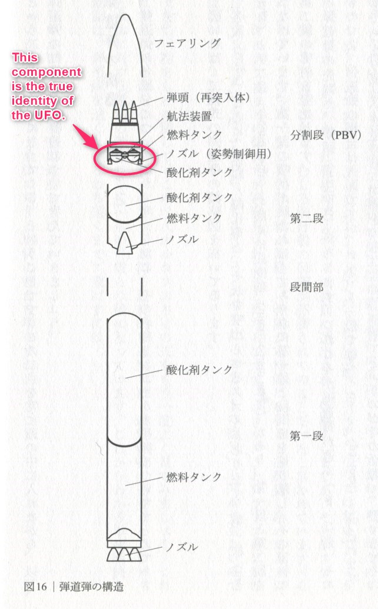
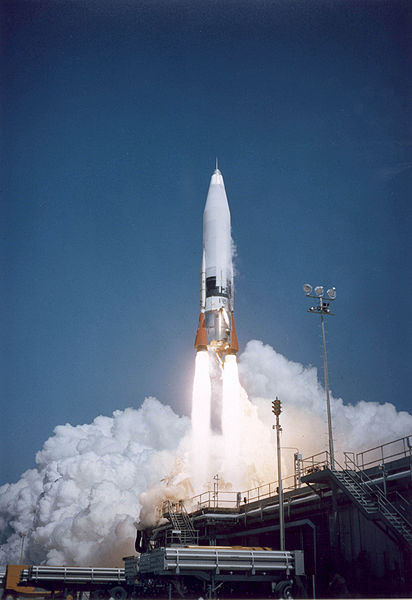
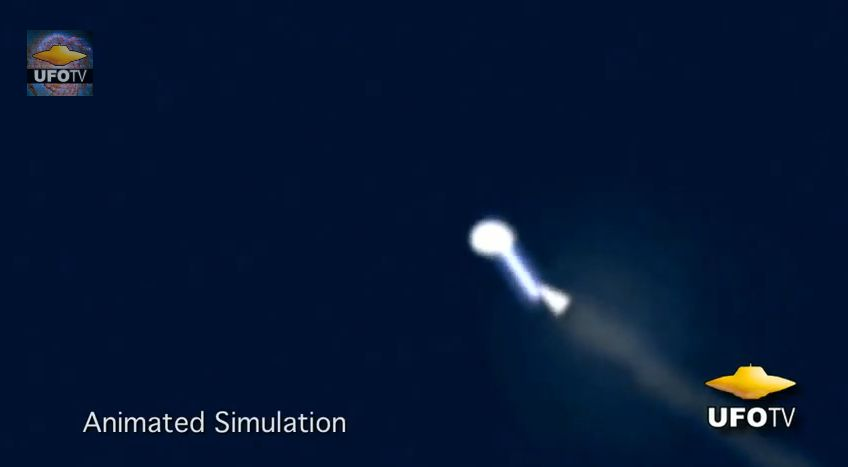
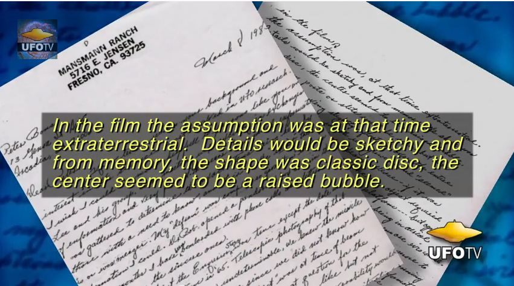

1964-09-15, California: UFO shoots down test-fired ICBM → Rational explanation for the identity of this UFO

Past Article History
(2022-01-16) Additions - The previous article based on this article is below. 1964-09-15, California: UFO shoots down test-fired ICBM (2017-11-07) (2017-11-07) Additions Added a more detailed video on this issue. In addition, I cite three previous articles on the subject. (2014-04-07) Additions (2013-02-24) Additions (2012-10-06) Creating the first part1964-09-15, California: UFO shoots down test-fired ICBM
▼Expansion
Preface
- The source lists cases of UFOs continuously appearing over nuclear weapons and nuclear missile facilities at Air Force bases from 1945 to July 2012, disrupting and interfering with their operations. - I would like to introduce one of the incidents, in which a UFO shot down an ICBM, because it was personally interesting to me. The other incidents listed in the source are also interesting, but the article is long and the translation is tedious, so I will omit them.Summary
- On September 15, 1964, a UFO was accidentally photographed during an ICBM test launch at Vandenberg Air Force Base in California. - The following scenes were shown in the recorded video, which was classified as top secret. - Immediately after the missile's nuclear warhead (dummy, no actual warhead) separated from the booster section, a disk-shaped object with a dome circled around the warhead. - The UFO struck the warhead directly four times with a tremendous flash of light, like an electric shock. Immediately afterward, the missile crashed into the Pacific Ocean, several hundred miles short of its target. - CIA investigators have reviewed the film. - The above is based on information provided by Robert Jacobs (former Air Force Second Lieutenant or Lieutenant) and Florenze Mansmann (retired: Major).the original text
September 15, 1964: A UFO was inadvertently filmed during an ICBM test flight at Vandenberg AFB, California. The footage, classified Top Secret, showed a domed-disc object circling the dummy nuclear warhead shortly after it had separated from the booster. The UFO then directed four lightning-like bursts of light at warhead, whereupon it tumbled into the Pacific Ocean, hundreds of miles short of its intended target. CIA agents confiscated the film. (Former USAF Lt. Robert Jacobs and retired Maj. Florenze Mansmann)source
http://www.theufochronicles.com/2012/10/ufo-activity-at-nuclear-weapons-sites.html" target="_blank" title=" http://www.theufochronicles.com/2012/10/ufo-activity-at-nuclear-weapons-sites.html"> http://www.theufochronicles.com/2012/10/ufo-activity-at-nuclear-weapons-sites.html (2012-10-06)
1964: A scene was filmed of a missile being shot down in flight by a UFO
▼Expansion
- The scene in question begins at 33:57 in the video below. - At the time, Robert Jacobs (1st Lt.) was stationed at Vandenberg Air Force Base and was on a mission to photograph ICBM (Intercontinental Ballistic Missile) launches from the ground with a telescope.  - Originally, missiles were equipped with nuclear warheads, but on this occasion, dummy warheads were installed. - The day after the film was developed and delivered, he was summoned to a strange meeting. Two men in gray suits were present. The film was shown there. Although Robert Jacobs was unaware of it at the time he shot the film, the telescope footage included a scene of a UFO approaching the dummy warhead and shooting it down with a beam of light. - The missile was flying at this time 160 miles above the ground at 11,000 to 14,000 miles per hour. A saucer-shaped object approached it, radiated two rays of light, and shot it down.  (Reproduced picture) - He was asked at this table what he thought of this image. He replied, "It looks like a UFO. He was warned not to tell anyone about it. - The material on UFOs at this time.  (2013-02-24)
Denialist's opinion: There was no remote control or intervention of nuclear missiles by UFOs (on the way: Part 1)
▼Expansion
- Since this is a side note, I would like to take this opportunity to add the following incident related to nuclear missiles. The following is a rebuttal to the opinion that "a UFO shot down an ICBM that was test-fired. The theory that the 1964 incident in which a UFO shot down an ICBM was faked（2013.06.04） - As usual, I left the introductory article of the rebuttal in the middle of the article, but the purpose of the rebuttal is as follows (it was almost a year ago, so my memory is quite vague). - Even if a UFO destroyed an ICBM with its laser beam, the laser beam itself should not be visible. - The characteristics of the imaging tube should not be able to record the phenomena described in the testimony. - However, this objection also has the following drawbacks. - There is no evidence to conclude that it was a laser beam, as there have been multiple reports of UFOs emitting visible beams. - The characteristics of the imaging tube are based on a number of assumptions, and have not been proven. - More importantly, several people, including the supervisor of this first witness, have testified confirming this witness' statement. I have a memory of a video of that testimony scene that I have shown in past articles. The biggest problem is that there is no physical evidence. (2014-04-07)
(The following is the part added on 2017-11-07)Introduction
▼Expansionn
- I saw a more detailed video on this subject, so I'll add it. - The following contents are new: - Video of the ICBM being tracked by a special large camera used for observation. - Details of the shape of the UFO. - The fact that the UFO changed its posture when it attacked the dummy warhead. - The "two men in gray suits" mentioned above were CIA personnel.Applicable section
・from 21:00Video (48:58)
・The New UFO Documentary the Elite Hoped Would Never Be Aired in Publiccomment
- This witness has a high degree of social credibility because he was a university professor after being discharged from the military. I have a vague recollection that he was a university professor at the time of his testimony. (2017-11-07)
Preface
- Since the other day I have been advocating the hypothesis that "UFOs are a special kind of hallucination". In order to assert this hypothesis, it is necessary to explain the major cases that may be its counterexamples, and that they are not counterexamples (i.e., the hypothesis is valid). - One of the key cases that might be a counterexample was the case of the title. This will be discussed.Core of the testimony
. - Consider the following testimonyOn September 15, 1964, a UFO was accidentally photographed during an ICBM test launch at Vandenberg Air Force Base in California. The following scenes were shown in the recorded video, which was classified as top secret. Immediately after the missile's nuclear warhead (dummy, no actual warhead) separated from the booster section, a disk-shaped object with a dome circled around the warhead. The UFO struck the warhead directly four times with a tremendous flash of light, like an electric shock. Immediately afterward, the missile crashed into the Pacific Ocean, several hundred miles short of its target.- Assuming that this testimony does not lie, can we say that the UFO cannot be a "special hallucination" and is a real flying object?I'm going to guess what this UFO is...
- I do not believe that UFOs appeared in this case. I believe that this ICBM was defective and could not fly properly and simply disintegrated in mid-air and crashed. - The object that appeared to be a UFO was an attitude-control nozzle (*1) attached to the lower part of the warhead (the split stage), which was poorly assembled. - The shape of the nozzle part conforms to the "disk-shaped object with a dome" mentioned in the testimony. - The "tremendous light like an electric shock" emitted from the UFO was probably the light from the jet that blew out from the malfunctioning nozzle.（*1）
Source: Sho Tada, "Ballistic Bullets", 2021, Meikodo, p. 78.Other Evidence
- First, there are no analogues; there is absolutely no other testimony of UFOs shooting down ICBMs or other missiles (at least not that I recall). - Second, the theory that "UFOs warn of nuclear weapons or nuclear explosions" or that "nuclear explosions can cause serious damage to nearby star systems or to nearby parallel universes" is rife among UFO enthusiasts. But if this is true, then why have no UFOs ever warned of nuclear tests that have been conducted more than 2,000 times, nor have any of them ever been stopped by force? There is no explanation. - Third, which of the following two possibilities is more likely? Naturally, it should be (b). (a) UFOs attacked and brought down an ICBM. (b) The ICMB was defective and broke down in mid-air, caught fire, and crashed.Supplementation
- If my above guess is correct, the Air Force, knowing full well that this has nothing to do with UFOs (*2), made the following inducement to elicit the statement, "It looks like a UFO.- He was asked at this table what he thought of the video. He replied, "It looks like a UFO. He was warned not to tell anyone about it.- Why? The Air Force wanted to convince civilian ufologists that this was a real UFO case, the same motivation that led UFO researchers to believe the Roswell case was real. Richard Doty, a member of the Air Force AFOSI, has been deceiving civilian UFO researchers with various falsehoods according to this motive.（*2）
- This is readily apparent from the telemetry data. - Even without looking at the telemetry data, what I have surmised here should be obvious to experts. All the Air Force experts must have watched the reaction of the UFO community to this with a sly smile on their faces. - What I find odd is that none of the UFO skeptics or UFO deniers (at least as far as I know) have given any indication that they have realized the identity of the UFO in this case.postscript
- I would like to conclude that this case is now closed. - It has taken a little less than 10 years since I first wrote about this case in this blog, but I would like to judge that the case has finally been settled. (2022-01-16)
Thanks
- Translated with www.DeepL.com/Translator (free version)Original article on which the translation was based
1964-09-15, カリフォルニア：UFO がテスト発射した ICBM を撃墜 → この UFO の正体を合理的に説明 (2022-01-16) (2022-04-14 translation)
First published
1964-09-15, California: UFO shoots down test-fired ICBM → Rational explanation for the identity of this UFO (2022-04-14)